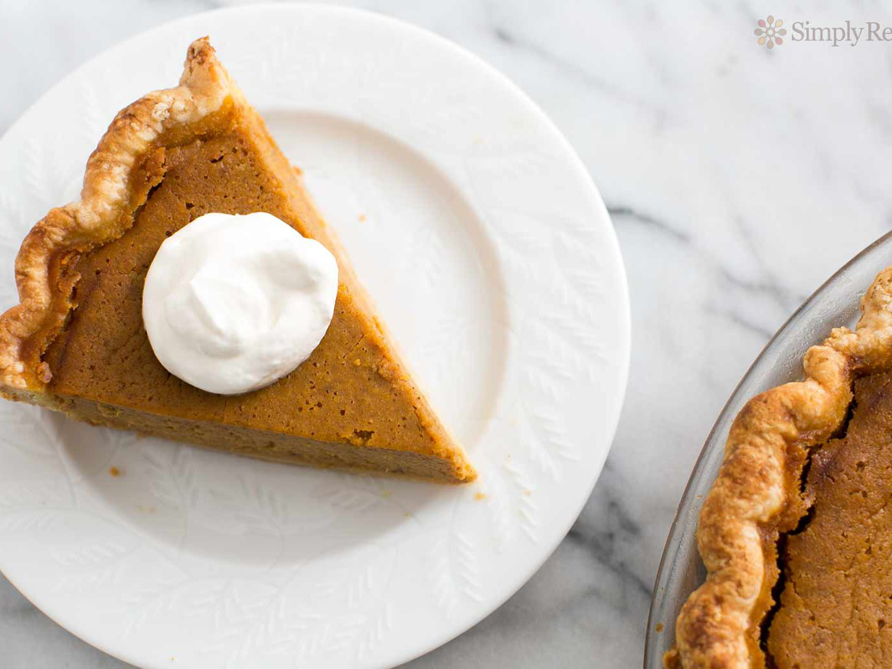

Pumpkin Pie

Description
This traditional dessert is the perfect ending to any Thanksgiving feast!
Ingredients
- 1 (15 ounce) can pumpkin puree
- 1 (14 ounce) can sweetened condensed milk
- 2 large eggs
- 1 teaspoon ground cinnamon
- 0.5 teaspoon ground ginger
- 0.5 teaspoon ground nutmeg
- 0.5 teaspoon salt
- 1 (9 inch) unbaked pie crust
Steps
- Preheat oven to 425°F.
- Whisk pumpkin, sweetened condensed milk, eggs, spices and salt in medium bowl until smooth.
- Pour into crust. Bake 15 minutes.
- Reduce oven temperature to 350 degrees F and continue baking 35 to 40 minutes or until knife inserted 1 inch from crust comes out clean.
- ool. Garnish as desired. Store leftovers covered in refrigerator.